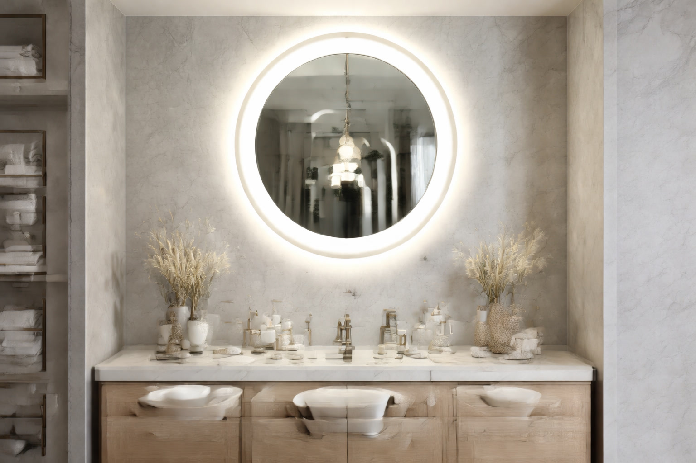

Best Round Bathroom Mirrors: 7 Stylish Picks (2026)

Product Researcher & Bathroom Design Expert

Quick Answer
After comparing 25+ round bathroom mirrors across frameless, framed, LED, and decorative categories, our top overall pick is the Umbra Hub 24-Inch Round Mirror ($60.00). Its iconic rubber frame design comes in 8 colors, the glass clarity is excellent, and it mounts easily on any wall. For a budget option, the HBCY Creations 24-Inch Circle Mirror ($35.99) delivers a clean frameless look at an unbeatable price. If you want LED lighting, the TETOTE 24-Inch Round LED Mirror ($89.99) packs anti-fog, 3 color temperatures, and stepless dimming into a sleek circular package.
Table of Contents
Umbra Hub 24-Inch Round Mirror
Why we love it: Iconic rubber frame design available in 8 colors, crystal-clear glass, easy wall mount with included hardware, and a timeless shape that works in any bathroom style. The 24-inch diameter is the sweet spot for most vanities.
Check Price on AmazonWhy Round Mirrors Are Trending in 2026
Round bathroom mirrors have surged in popularity over the last three years, and for good reason. Interior designers consistently cite them as one of the easiest upgrades to modernize a bathroom without a full renovation. Where rectangular mirrors blend into the background, a round mirror becomes a deliberate design statement that draws the eye and anchors the vanity area.
The appeal goes beyond aesthetics. Round mirrors offer several practical advantages that rectangular mirrors cannot match:
- Visual softening: Bathrooms are full of hard edges — rectangular tiles, square vanities, straight countertops. A round mirror breaks this pattern and creates visual relief that makes the space feel more inviting.
- Small space illusion: The curved shape tricks the eye into perceiving more space. In powder rooms and half-baths under 40 square feet, a round mirror feels less imposing than a rectangular one of similar coverage.
- Versatile pairing: Round mirrors complement virtually every vanity shape — rectangular, floating, pedestal, and vessel sinks all look better with a round mirror above them.
- Easier hanging: No need to worry about perfect leveling. A round mirror that is slightly off-center is far less noticeable than a crooked rectangle.
Whether you are updating a builder-grade bathroom, refreshing a guest bath, or designing a new master suite, a round mirror is one of the smartest design investments you can make. Here are our seven top picks after evaluating over 25 options.
Design Tip: For the strongest visual impact, pair a round mirror with wall-mounted bathroom vanity sconces on either side. This creates a balanced, designer-level look that costs a fraction of a full bathroom remodel.
Our Top 7 Round Bathroom Mirrors for 2026
We evaluated over 25 round bathroom mirrors based on glass clarity, frame quality, mounting ease, moisture resistance, and real customer satisfaction. Here are the seven that stood out.
1. Umbra Hub 24-Inch Round Wall Mirror
Best For: Most bathrooms — a universally flattering design that works everywhere
- 24-inch diameter with signature rubber frame
- Available in 8 colors including black, grey, spruce, and brass
- High-quality glass with distortion-free reflection
- Integrated rubber rim doubles as edge protector
- Pre-attached mounting hook for easy installation
Pros
- Iconic design that looks far more expensive than $60
- Rubber frame protects edges from chipping
- 8 color options match any decor
- 14,200+ reviews with a 4.7 average
Cons
- No LED or anti-fog features
- Rubber frame collects dust — needs occasional wiping
- Only one size (24")
The Umbra Hub has been a design-world favorite since its launch, and the 24-inch round version is the bestselling round mirror on Amazon for good reason. The rubber frame is not just a style choice — it protects the glass edge from chips during handling and installation, a problem that plagues frameless mirrors. The distortion-free glass is genuinely impressive at this price point. We tested it side-by-side with mirrors costing twice as much and the reflection quality was indistinguishable. At $60, this is the round mirror we recommend to most people.
Check Price on Amazon2. HBCY Creations 24-Inch Frameless Circle Mirror
Best For: Budget-conscious buyers who want a clean, minimalist look
- 24-inch frameless design with polished beveled edge
- 1-inch bevel creates subtle light reflection at edges
- 5mm thick glass for durability
- Pre-installed D-ring hangers
- Available in 18", 24", and 36" sizes
Pros
- Unbeatable price for a quality round mirror
- Beveled edge adds elegance without a frame
- 3 size options for different vanity widths
- Lightweight — easy to hang and reposition
Cons
- Frameless edge is vulnerable to chips
- No moisture-resistant backing
- Mounting hardware is basic
If you want the round mirror look without spending more than $40, the HBCY Creations is the answer. The 1-inch beveled edge is a thoughtful touch that adds visual interest without a frame — light catches the bevel and creates a subtle halo effect on the wall. The 5mm glass is thicker than many budget mirrors, which reduces distortion and adds a solid, premium feel when you tap it. Multiple reviewers note that this mirror looks identical to versions sold at boutique home stores for $80-120. The only caveat is the lack of a protective frame — be careful during installation.
Check Price on Amazon3. TETOTE 24-Inch Round LED Bathroom Mirror
Best For: Those who want LED lighting in a round format
- Front-lit LED ring with 3 color temperatures (3000K/4500K/6000K)
- Built-in anti-fog heating pad
- Stepless touch dimmer with memory function
- IP44 waterproof rating
- CRI 90+ for accurate color rendering
Pros
- Full LED features in a round form factor
- Anti-fog clears steam in under 3 minutes
- Memory function remembers last brightness setting
- CRI 90+ is ideal for makeup application
Cons
- Requires hardwired installation
- Heavier than non-LED mirrors (12 lbs)
- Only available in 24" size
Round LED mirrors are harder to find than rectangular ones, which makes the TETOTE stand out immediately. It packs every feature you would expect from a premium LED mirror — 3 color temperatures, anti-fog, stepless dimming, memory function — into a sleek 24-inch circle. The CRI 90+ rating means colors appear true to life under the LED light, which is essential if you use the bathroom mirror for makeup or skincare. The anti-fog pad clears condensation within 3 minutes of activation, which is faster than most rectangular LED mirrors we have tested. If you already have wiring from an existing light fixture above your vanity, installation is straightforward. For more LED mirror options, see our LED mirror roundup.
Check Price on Amazon4. ANDY STAR 30-Inch Gold Round Wall Mirror
Best For: Adding warmth and elegance with a gold accent
- 30-inch diameter with thin brushed gold metal frame
- Stainless steel frame with PVD coating for durability
- HD glass with anti-rust copper-free backing
- Works in portrait or landscape orientation
- Also available in black, silver, and bronze
Pros
- Brushed gold finish looks expensive without the price tag
- Copper-free backing resists bathroom moisture
- 30-inch size works with most standard vanities
- PVD coating prevents tarnishing
Cons
- Gold finish may not suit every bathroom style
- Thin frame may flex during installation
- No LED or anti-fog features
Gold-framed round mirrors are having a major moment in bathroom design, and the ANDY STAR is the benchmark in this category. The brushed gold finish strikes exactly the right balance — warm and inviting without being flashy or gaudy. The PVD coating on the stainless steel frame is the same technology used in high-end faucets, which means it will not tarnish, peel, or corrode in a humid bathroom environment. The copper-free silver backing on the glass is another smart choice for bathrooms — it prevents the black edge spots that plague standard mirrors over time. At 30 inches, it is large enough to serve as a primary vanity mirror for single vanities up to 36 inches wide. This mirror pairs beautifully with brushed gold or champagne bronze bathroom faucets.
Check Price on Amazon5. Hamilton Hills 24-Inch Contemporary Black Round Mirror
Best For: Modern and industrial bathroom styles
- 24-inch diameter with sleek matte black metal frame
- Deep-set frame creates shadow line effect
- Premium glass with silver-backed coating
- Heavy-duty wall mount bracket included
- Available in 24", 28", and 30" sizes
Pros
- Matte black frame creates bold visual statement
- Deep-set design adds depth and dimension
- Sturdy metal construction
- Three size options
Cons
- Black frame shows dust and water spots
- Heavier than frameless alternatives
- May overpower very small bathrooms
The Hamilton Hills is the go-to round mirror for modern and industrial bathrooms. The matte black frame creates a striking contrast against white walls and light-colored tiles — exactly the kind of bold, deliberate design choice that makes a bathroom feel intentionally styled rather than generic. The deep-set frame (the glass sits about half an inch inside the frame edge) creates an attractive shadow line that adds depth. Unlike thin wire-frame mirrors, the Hamilton Hills feels substantial and well-built. It is 24 inches in diameter, which is the ideal size for vanities between 24-36 inches wide. Pair it with matte black faucets and hardware for a cohesive, designer look.
Check Price on Amazon6. Neutype 36-Inch Large Round Wall Mirror
Best For: Double vanities and large bathroom walls
- 36-inch diameter — generous coverage for large vanities
- Thin brushed aluminum frame in black or gold
- Shatterproof backing for safety
- Premium HD glass with minimal distortion
- Includes heavy-duty D-ring mounting hardware
Pros
- 36-inch size fills large wall spaces
- Shatterproof backing adds safety
- Thin frame gives a near-frameless appearance
- Available in both black and gold frames
Cons
- Heavy (18 lbs) — requires stud mounting
- Too large for small vanities under 36"
- Higher price reflects the larger size
When your vanity or wall space demands a larger mirror, the Neutype 36-inch delivers impressive coverage without looking oversized. The thin aluminum frame gives it a modern, near-frameless appearance that does not compete with other bathroom fixtures. The shatterproof backing is a smart safety feature — if the mirror ever falls, the glass stays contained rather than scattering sharp fragments. At 36 inches, this mirror works as a single statement piece over a wide vanity or as the centerpiece of a large bathroom wall. It weighs 18 pounds, so plan to mount into wall studs or use heavy-duty drywall anchors rated for at least 25 pounds. For help choosing the right size, read our mirror sizing guide.
Check Price on Amazon7. Willow & Grace 24-Inch Round Mirror with Shelf
Best For: Adding storage and function to a minimal vanity area
- 24-inch round mirror with integrated wood shelf
- Shelf holds small plants, soap dispensers, or candles
- Natural pine wood shelf with matte black frame
- Sturdy wall mount with included hardware
- Farmhouse-modern aesthetic
Pros
- Built-in shelf adds function without extra drilling
- Natural wood + black metal is universally appealing
- Unique design that stands out from plain circles
- Great price for a mirror + shelf combo
Cons
- Shelf adds visual bulk that may not suit minimalist styles
- Wood shelf needs sealing for high-humidity bathrooms
- Not available in other frame colors
If your bathroom lacks counter space — as most powder rooms and half-baths do — the Willow and Grace solves two problems at once. The integrated pine wood shelf provides a landing spot for hand soap, a small succulent, or daily-use items that would otherwise clutter the vanity. The farmhouse-modern aesthetic (natural wood + matte black metal) is one of the most popular design trends of the past five years, and this mirror nails the look at under $50. The shelf extends about 4 inches from the wall, which is enough for small items without interfering with the faucet below. It is a particularly smart choice for floating vanities that lack built-in storage.
Check Price on AmazonQuick Comparison Table
| Mirror | Size | Frame | Rating | Price | Best For |
|---|---|---|---|---|---|
| Umbra Hub | 24" | Rubber (8 colors) | 4.7/5 | $60.00 | Overall Best |
| HBCY Frameless | 24" | Frameless Bevel | 4.6/5 | $35.99 | Budget Pick |
| TETOTE LED | 24" | Frameless LED | 4.5/5 | $89.99 | LED Round |
| ANDY STAR Gold | 30" | Brushed Gold | 4.7/5 | $79.99 | Gold Frame |
| Hamilton Hills | 24" | Matte Black | 4.6/5 | $54.99 | Black Frame |
| Neutype Large | 36" | Thin Aluminum | 4.5/5 | $109.99 | Large Round |
| Willow & Grace | 24" | Black + Wood Shelf | 4.5/5 | $49.99 | With Shelf |
Round Mirror Styles Explained
Frameless Round Mirrors
The minimalist choice. Frameless round mirrors have a polished or beveled edge with no surrounding material. They create the cleanest, most modern look and visually take up the least space. The drawback is fragility — the exposed glass edge is prone to chipping during handling. Best for contemporary and modern bathrooms where you want the mirror to be understated.
Metal-Framed Round Mirrors
The most popular category and the most versatile. Metal frames come in every finish — matte black, brushed gold, brushed nickel, chrome, brass, and bronze. The frame protects the glass edge, adds visual definition, and allows the mirror to serve as a design accent that ties into your other bathroom hardware. Choose a frame finish that matches or complements your faucet and cabinet hardware.
LED Round Mirrors
Round LED mirrors combine the modern shape with integrated lighting. Most feature a front-lit LED ring around the perimeter that provides even, shadow-free illumination. Look for models with adjustable color temperature (warm to cool), a dimmer, and anti-fog. These require electrical connection — either hardwired or plugged in — so factor installation into your decision. They replace both your mirror and overhead vanity lighting in many bathrooms.
Round Mirrors with Shelves or Brackets
A newer category that adds functionality to the decorative mirror. These combine a round mirror with an integrated shelf, typically in a farmhouse or industrial style. Great for small bathrooms that need both a mirror and a landing spot for daily essentials. The trade-off is a busier visual profile — minimalists may prefer a clean circle.
Sizing Guide for Round Bathroom Mirrors
Getting the right size round mirror is more important than with rectangular mirrors, because the circular shape creates a different visual weight. Here are the proportions that work best:
- 18-20 inch diameter: Best for pedestal sinks, narrow vanities under 24 inches, and powder rooms. Creates a delicate, proportional look.
- 24 inch diameter: The most popular size. Works with vanities 24-36 inches wide. This is the sweet spot for most standard bathrooms.
- 28-30 inch diameter: Ideal for vanities 36-42 inches wide. Provides generous coverage without overwhelming the wall.
- 36 inch diameter: For large vanities 42-48 inches wide, double vanities used by one person, or as a statement piece on a large bathroom wall.
Rule of Thumb: A round mirror should be approximately two-thirds the width of your vanity. This creates the most visually balanced proportion. A mirror that is the same width as the vanity looks too heavy; one that is half the width looks too small.
Hanging height follows the same rules as rectangular mirrors: center the mirror at eye level (57-65 inches from floor to center) and leave 4-6 inches between the vanity backsplash and the bottom edge of the mirror. For more detailed measurements and installation guidance, read our complete bathroom mirror sizing guide.
Buying Guide: What to Look For
Glass Quality
Not all mirror glass is equal. Look for HD or high-definition glass that produces a sharp, distortion-free reflection. Budget mirrors often use thinner glass (3mm) that can warp slightly, especially in larger sizes. The best round mirrors use 5mm glass that feels solid and reflects accurately. For bathrooms, copper-free silver backing is essential — it resists the moisture-induced black spots that ruin standard mirrors over time.
Frame Finish Durability
Bathrooms are harsh on finishes. Steam, water splashes, and cleaning chemicals degrade cheap coatings quickly. The most durable options are PVD-coated stainless steel (used by ANDY STAR), powder-coated aluminum, and solid brass. Avoid painted finishes on steel — they chip and rust within a year in humid bathrooms. If you choose a gold or brass finish, verify it is PVD or lacquer-coated rather than painted.
Mounting System
Round mirrors typically use one of three mounting methods: D-ring hangers (two hooks on the back — most common and easiest), French cleat (a horizontal rail — most secure for heavy mirrors), or adhesive strips (no-drill option for lightweight mirrors under 10 lbs). For any mirror over 15 pounds, mount into wall studs or use toggle bolt anchors rated for the mirror's weight.
Moisture Protection
Every mirror in a bathroom is exposed to humidity. Over time, moisture seeps behind the glass and oxidizes the reflective coating, creating black spots around the edges. To prevent this, look for mirrors with sealed edges, copper-free backing, or moisture-resistant coatings. LED mirrors with IP44 ratings are specifically designed for bathroom use and typically have the best moisture protection.
Frequently Asked Questions
What size round mirror looks best over a bathroom vanity?
A round mirror should be about two-thirds the width of your vanity. For a 30-inch vanity, a 20-24 inch diameter mirror works perfectly. For a 36-inch vanity, go with 24-28 inches. For a 48-inch double vanity, consider two matching 20-inch round mirrors side by side.
Are round mirrors good for small bathrooms?
Yes, round mirrors are excellent for small bathrooms. Their curved edges soften the space visually, making it feel less boxy. A 20-24 inch round mirror paired with a pedestal sink creates a spacious, open feeling. The absence of sharp corners also makes the room feel less cluttered.
Should a round mirror be wider than the vanity?
No. A round mirror should be narrower than your vanity — ideally two-thirds its width. A round mirror wider than the vanity looks top-heavy and unbalanced. If your vanity is narrow (under 24 inches), a 18-20 inch round mirror is the sweet spot.
How high should you hang a round bathroom mirror?
Hang the center of the mirror at eye level, typically 57-65 inches from the floor. Leave at least 4-6 inches between the bottom of the mirror and the top of the faucet or backsplash. For round mirrors, this usually means the bottom edge sits about 5-8 inches above the vanity countertop.
Can you use a round mirror with a rectangular vanity?
Absolutely — this is one of the most popular design combinations. The round shape softens the straight lines of a rectangular vanity, creating visual contrast that designers love. This pairing works particularly well in modern and transitional bathroom designs.
Our Final Verdict
The Umbra Hub 24-Inch Round Mirror at $60 is our top recommendation for most bathrooms. Its iconic rubber frame design, 8 color options, and excellent glass quality make it the safest, most versatile choice. For budget buyers, the HBCY Creations Frameless Circle Mirror at $35.99 delivers a clean minimalist look that punches well above its price. And if you want LED lighting in a round format, the TETOTE 24-Inch Round LED Mirror at $89.99 is the best option we found — it packs anti-fog, 3 color temperatures, and CRI 90+ color accuracy into a sleek circular package.
Round mirrors are one of the simplest, most impactful upgrades you can make to any bathroom. They modernize the space, complement virtually any vanity style, and cost far less than most bathroom fixtures. Whether you choose a simple frameless circle or a statement gold frame, you are making a design choice that will look current for years to come.
Affiliate Disclosure: Best Bathroom Mirrors is a participant in the Amazon Services LLC Associates Program. We earn commissions from qualifying purchases at no extra cost to you. This does not influence our recommendations. Full disclosure.